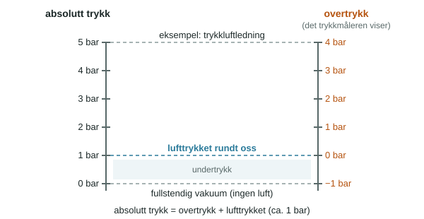

Kraft og trykk
Trykk er en av de viktigste størrelsene i et prosessanlegg. Tanker, rør, kompressorer og pumper har alle et trykk du må holde øye med. Her lærer du hva trykk er, hvorfor det kan gi så store krefter, og forskjellen på overtrykk og absolutt trykk.
Kraft
En kraft er et dytt eller et drag. En pumpe som skyver væske, en bolt som holder et lokk, og tyngden av en tank er alle krefter. Kraft har symbolet F og måles i newton (N).
Den kraften du kjenner best, er tyngden: kraften jorda trekker en gjenstand ned med. Tyngden regnes ut slik:
\[ G = m \cdot g \]
- G = tyngden (N)
- m = massen (kg)
- g = tyngdeakselerasjonen, 9,81 m/s² på jorda
En kasse på 50 kg har tyngden \( 50 \text{ kg} \cdot 9{,}81 \text{ m/s}^2 \approx 490 \text{ N} \). Som tommelfingerregel tilsvarer 1 kg omtrent 10 N.
I dagligtale sier vi at noe «veier 50 kg». Det er massen. Tyngden er kraften, 490 N. Massen er den samme overalt, men på månen ville tyngden bare vært en sjettedel så stor.
Trykk er kraft fordelt på et areal
Står du på snøen med vanlige sko, synker du ned. Med ski synker du ikke. Kraften er den samme, men med ski fordeles den på et større areal. Trykket blir mindre.
\[ p = \frac{F}{A} \]
- p = trykk (Pa)
- F = kraft (N)
- A = areal (m²)
Enheten for trykk er pascal (Pa). 1 Pa er 1 N fordelt på 1 m². Det er svært lite, omtrent som et ark som ligger på et bord. Derfor bruker vi oftest bar i anlegget: 1 bar = 100 000 Pa.
Du kan snu formelen. Kjenner du trykket og arealet, finner du kraften: \( F = p \cdot A \).
I en gass eller en væske virker trykket i alle retninger. Det presser like mye på bunnen, veggene og lokket i en tank. Hvordan trykket øker nedover i en væske, lærer du på siden Trykk i væsker.
Oppgave: En tank med syre har en samlet masse på 5000 kg. Den står på fire bein, og hvert bein har en fot på 0,010 m² (10 cm × 10 cm). Hvor stort trykk gir føttene på gulvet?
Løsning:
- Kraften er tyngden: \( F = m \cdot g = 5000 \text{ kg} \cdot 9{,}81 \text{ m/s}^2 = 49\,050 \text{ N} \)
- Arealet er fire føtter: \( A = 4 \cdot 0{,}010 \text{ m}^2 = 0{,}040 \text{ m}^2 \)
- \( p = \dfrac{F}{A} = \dfrac{49\,050 \text{ N}}{0{,}040 \text{ m}^2} \approx 1\,200\,000 \text{ Pa} = 12 \text{ bar} \)
Svar: Ca. 12 bar. Sto tanken med hele bunnen på 2,0 m² mot gulvet, ville trykket bare vært ca. 0,25 bar. Derfor settes tunge tanker på stålplater eller et fundament som fordeler kraften.
Små trykk kan gi store krefter
Snur du formelen til \( F = p \cdot A \), ser du at et lite trykk på et stort areal gir en stor kraft. Det er grunnen til at trykk i anlegg må tas på alvor.
Oppgave: En tank har et overtrykk på 3,0 bar. Mannlokket har et areal på 0,20 m². Hvor stor kraft presser trykket på lokket med?
Løsning:
- Gjør om til pascal: \( p = 3{,}0 \text{ bar} = 300\,000 \text{ Pa} \)
- \( F = p \cdot A = 300\,000 \text{ Pa} \cdot 0{,}20 \text{ m}^2 = 60\,000 \text{ N} \)
Svar: 60 000 N. Det er omtrent like mye som tyngden av 6 tonn. Hvis boltene løsnes mens tanken står under trykk, kan lokket slynges av.
Lufttrykket rundt oss
Lufta over oss har også en tyngde. Den gir et trykk på alt rundt oss som kalles atmosfæretrykket eller lufttrykket. Ved havnivået er det omtrent 101 300 Pa, altså ca. 1,013 bar. Det varierer litt med været og blir lavere jo høyere opp du kommer.
Vi merker ikke lufttrykket fordi det presser like mye fra alle kanter, også innenfra kroppen.
Overtrykk og absolutt trykk
Trykk kan regnes fra to forskjellige nullpunkter:
- Absolutt trykk regnes fra fullstendig vakuum, der det ikke er noen luft i det hele tatt. Absolutt trykk kan aldri bli mindre enn null.
- Overtrykk regnes fra lufttrykket rundt oss. Det er dette en vanlig trykkmåler, et manometer, viser. Står en tank åpen mot lufta, viser manometeret 0 bar.
Sammenhengen er:
\[ p_{\text{absolutt}} = p_{\text{over}} + p_{\text{luft}} \]
Når du regner overslag, kan du sette lufttrykket til ca. 1 bar.

Er trykket lavere enn lufttrykket, kaller vi det undertrykk eller vakuum. Da viser manometeret et negativt tall. Det laveste overtrykket som er mulig, er ca. −1 bar. Da er all lufta borte.
På datablader og tegninger skrives det ofte barg for overtrykk (g for gauge, måler) og bara for absolutt trykk. Står det bare «bar», må du finne ut hva som er ment.
Oppgave: Manometeret på en trykkluftledning viser 4,0 bar. Hva er det absolutte trykket?
Løsning: \( p_{\text{absolutt}} = 4{,}0 \text{ bar} + 1{,}0 \text{ bar} = 5{,}0 \text{ bar} \)
Svar: Ca. 5,0 bar absolutt trykk (5,0 bara). Absolutt trykk trenger du når du regner med gasser, se siden om gasser.
- Løsne aldri en flens, en kobling eller et mannlokk før trykket er avlastet etter prosedyren. Et manometer kan være tett eller defekt, så stol ikke blindt på at det viser 0 bar.
- Alle trykksatte tanker skal ha en sikkerhetsventil som slipper ut trykket hvis det blir for høyt. Den skal aldri blokkeres.
- Undertrykk er også farlig. Tømmes en tank uten at lufta slipper inn, kan lufttrykket utenfor knuse tanken.
Test deg selv
Hvilken enhet har kraft?
- pascal (Pa)
- newton (N)
- kilogram (kg)
Kraft måles i newton. Pascal er enheten for trykk, og kilogram er enheten for masse.
Den samme kraften virker på et mindre areal. Hva skjer med trykket?
- Det blir større.
- Det blir mindre.
- Det er det samme.
\( p = F/A \). Deler du på et mindre areal, blir trykket større. Derfor synker du ned i snøen uten ski.
En kraft på 200 N virker på et areal på 0,50 m². Hva er trykket?
- 100 Pa
- 400 Pa
- 200,5 Pa
\( p = \dfrac{200 \text{ N}}{0{,}50 \text{ m}^2} = 400 \text{ Pa} \)
Et manometer viser 2,0 bar. Omtrent hva er det absolutte trykket?
- 1,0 bar
- 2,0 bar
- 3,0 bar
Manometeret viser overtrykk. Absolutt trykk = overtrykk + lufttrykket ≈ 2,0 + 1,0 = 3,0 bar.
En tank står åpen mot lufta. Hva viser manometeret på toppen av tanken?
- 0 bar
- 1 bar
- −1 bar
Manometeret viser overtrykk, altså trykket i forhold til lufta rundt. I en åpen tank er trykket på toppen det samme som lufttrykket, så overtrykket er 0 bar.
Ordliste
| Begrep | Forklaring | Engelsk |
|---|---|---|
| kraft | Et dytt eller et drag som kan sette noe i bevegelse eller holde det på plass. Måles i newton (N). | |
| tyngde | Kraften jorda trekker en gjenstand ned med, G = m · g. 1 kg har en tyngde på ca. 10 N. | |
| trykk | Kraft fordelt på et areal, p = F/A. Måles i pascal (Pa) eller bar. | pressure |
| atmosfæretrykk | Trykket fra lufta rundt oss. Ved havnivået er det ca. 1,013 bar. | atmospheric pressure |
| overtrykk | Trykket i forhold til lufttrykket rundt oss. Det er dette en vanlig trykkmåler viser. Skrives ofte barg. | gauge pressure |
| absolutt trykk | Trykket regnet fra fullstendig vakuum. Absolutt trykk er overtrykk pluss lufttrykket. Skrives ofte bara. | absolute pressure |
| undertrykk | Trykk som er lavere enn lufttrykket rundt oss. Kalles også vakuum. | vacuum |
| manometer | Instrument som måler trykk, vanligvis overtrykket. | pressure gauge |
Les mer
- Trykk i væsker og Gasser i dette temaet bygger videre på denne siden.
Om kildene: Teksten, eksemplene og figuren på denne siden er laget for dette nettstedet. Siden bygger på undervisningsopplegg i kjemiprosess- og laboratoriefag ved Sauda vgs, som er utarbeidet med utgangspunkt i blant annet Kjemien stemmer, Laboranten og åpne nettkilder.